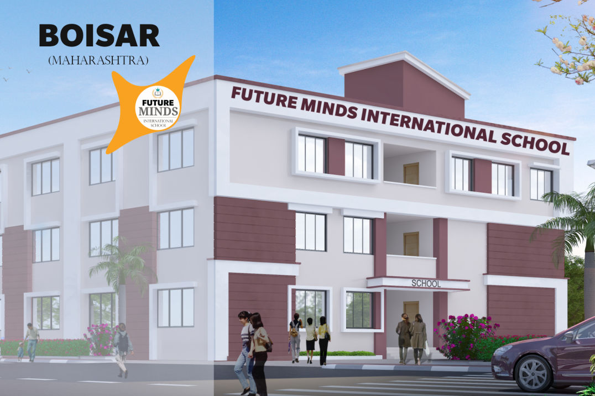

 Future Minds School, Boisar branch is located in Palghar district of Maharahstra which is recently developed as an district connected to mumbai and most fastest developed city in palghar district. Our boisar branch emphasizes on English medium with advanced incorporation of technology and pleasant environment for overall development of child. We had ready to launch this branch for academic year 2021-22 from Nursery to STD V.
We are proud to announce our branch in Gujarat at Navsari. The school is full ready to start for the upcoming academic year with all infrastructure and tech. Located near Navsari Railway Station is the most prominent school in Navsari. At Navsari we had world class education with well trained faculty and combined syllabus to make overall development of your child. At Navsari Branch admissions are open for English Pre Nursery, Nursery, K1 & K2 (Birla Open Minds Pre- School), STD 1 TO 10 (Gujarati Medium), STD 11 & 12 Science (English Medium), STD 11 & 12 Science & Commerce (Gujarati Medium)